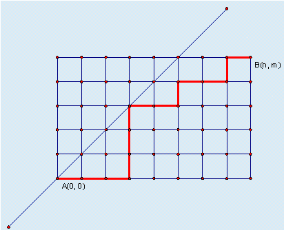

某城市的街道呈网格状，左下角坐标为A(0, 0)，右上角坐标为B(n, m)，其中n >= m。现在从A(0, 0)点出发，只能沿着街道向正右方或者正上方行走，且不能经过图示中直线左上方的点，即任何途径的点(x, y)都要满足x >= y，请问在这些前提下，到达B(n, m)有多少种走法。

| F.A.Qs | Home | Discuss | ProblemSet | Status | Ranklist | Contest | 入门OJ | ModifyUser Xeonacid | Logout | 捐赠本站 |
|---|
输入文件中仅有一行，包含两个整数n和m，表示城市街区的规模。
输出文件中仅有一个整数和一个换行/回车符，表示不同的方案总数。